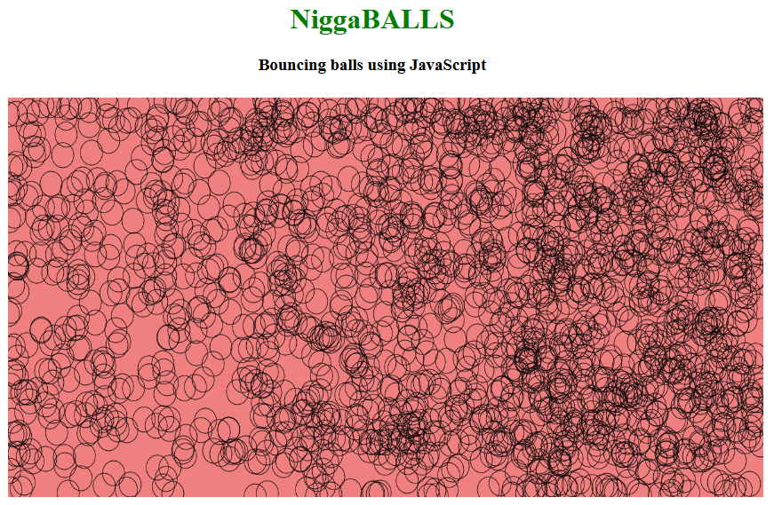
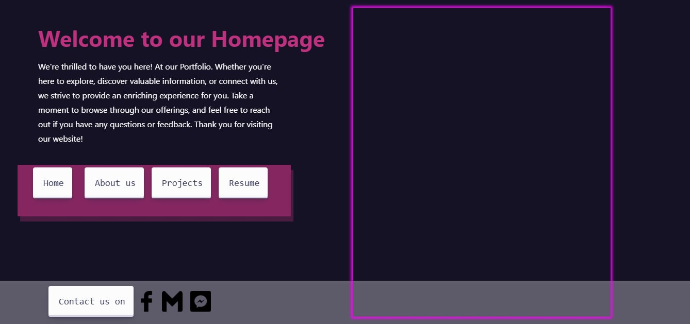
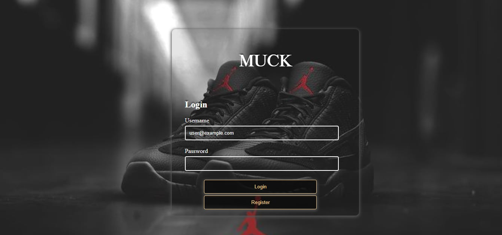
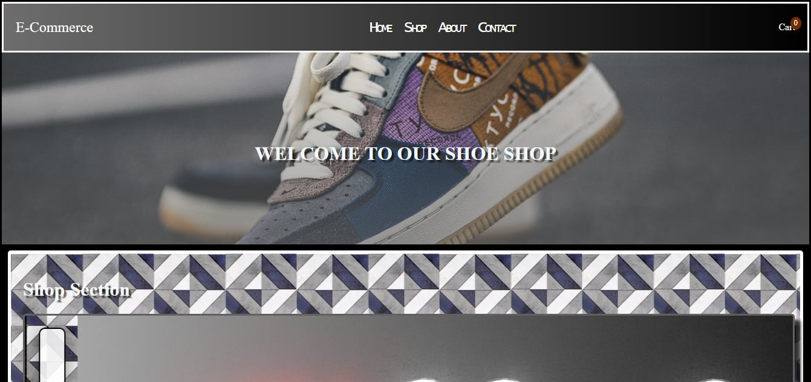
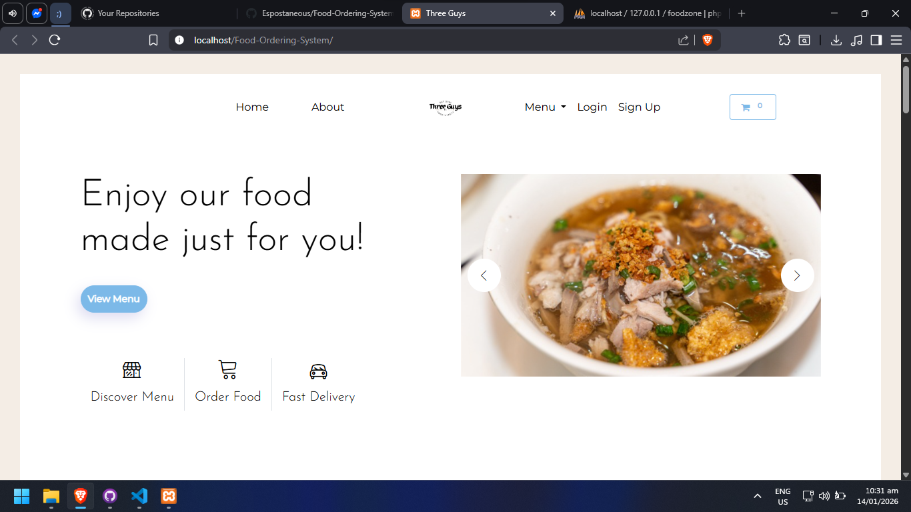
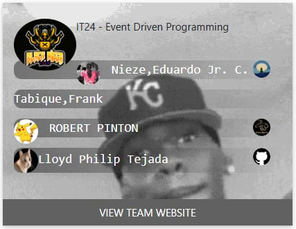
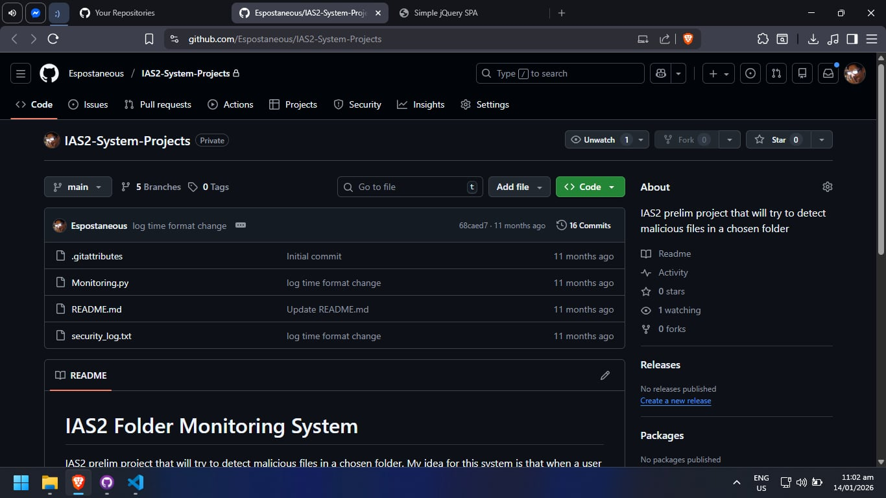

Portfolio List
- 1. it24-midterm

- -My oldest project recorded in github, collab with Jethro
- 2. School-Works

- -Old bouncing balls project on java, collabed with an abarquez brother, honestly forgo which one
- 3. IT23B-Elective-Portfolio

- -Elective Portfolio project with Lawrence Heras, unfortunately image urls have expired so no homepage photos
- 4. ABARQUEZ-IRVEN_MIJARES_TEJADA_GUNDAYA_E-COMMERCE_SECTIONC


- -Group project on E-commerce with Irven, Gian, and Jaysash. We had to present this at the covered court I vaguely recall
- 5. Food-Ordering-System

- -E-commerce Project with Gian and Ar-J, brings me back, had to configure xampp and database to open this
- 6. it24-main

- -Event Driven Programming with all sections, this was a very fun project, refreshing it to see what new cool things people added(or broke, it mostly broke, that was also very fun to watch)
- 7. IAS2-System-Projects

- -IAS2 prelim project that will try to detect malicious files in a chosen folder. My idea for this system is that when a user downloads something from the Internet, this program would first monitor the folder location of the download for any malicious activity and alert the user.